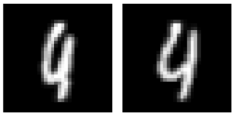
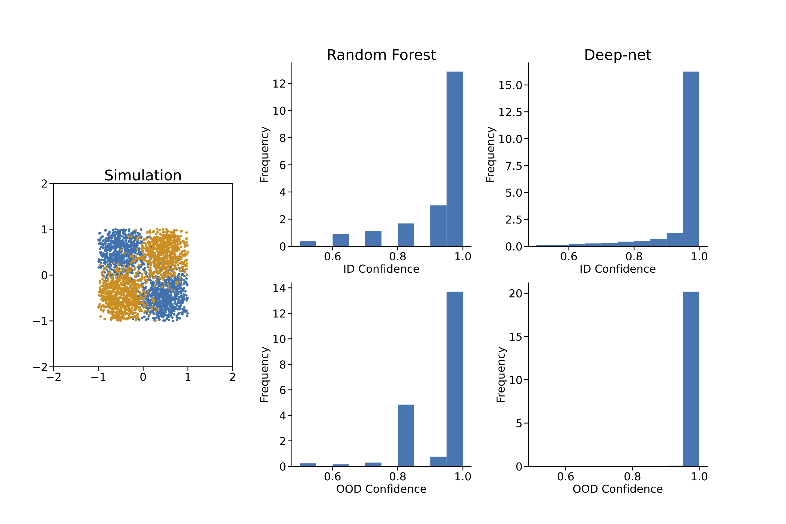
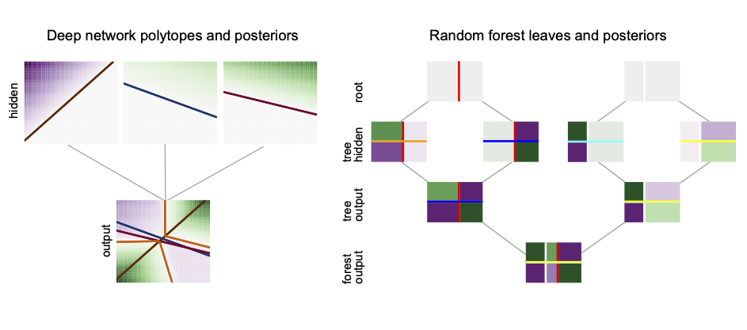
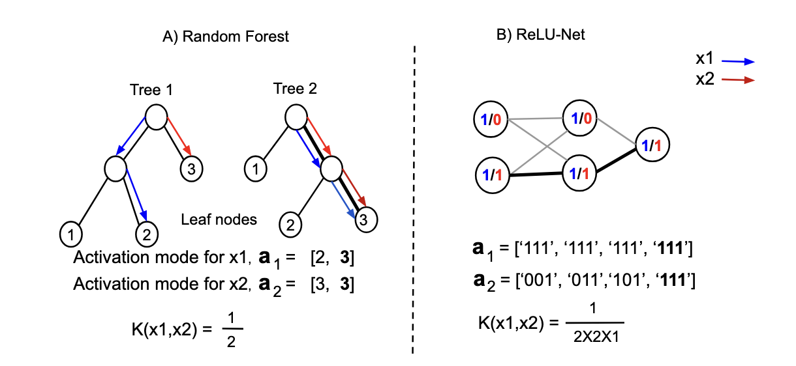
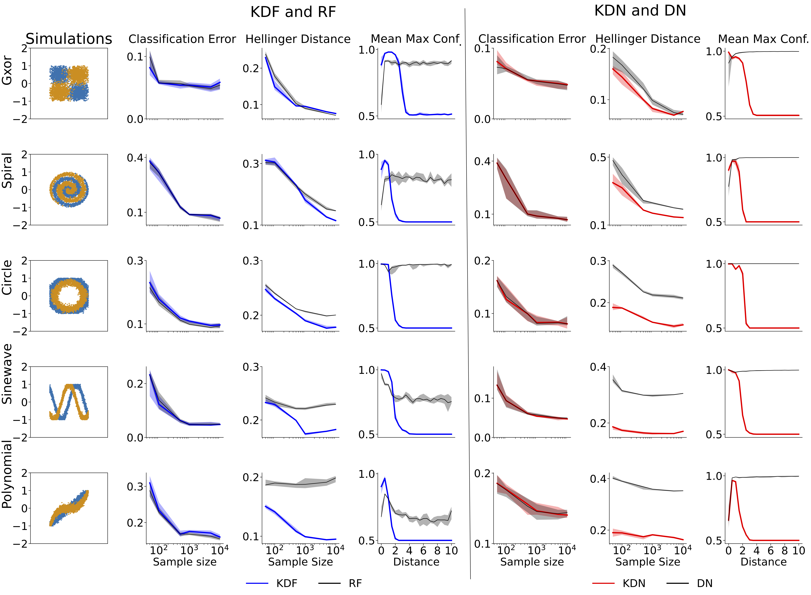
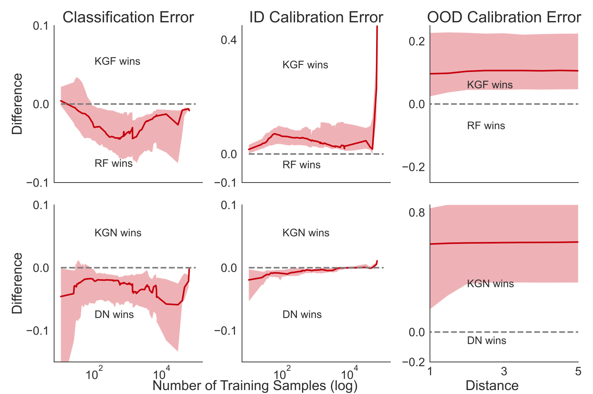
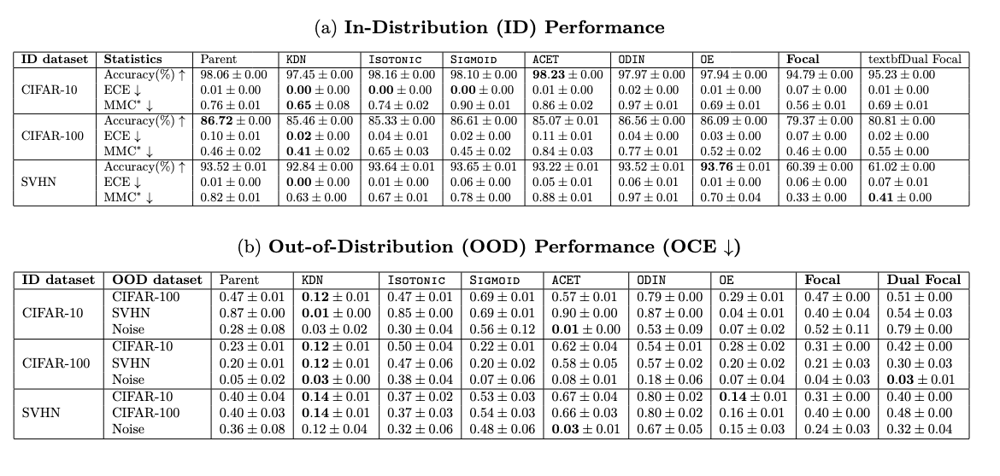
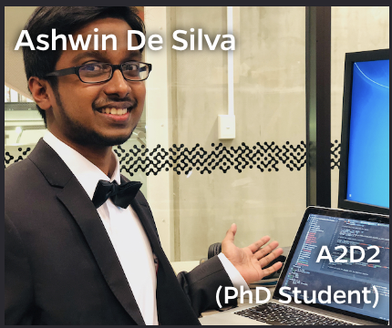

class: center, middle <br> <!-- --> <div style="display: flex; flex-direction: column; align-items: center; justify-content: center; padding: 40px; background-color: #fdfdfd; border-radius: 16px; box-shadow: 0 4px 12px rgba(0,0,0,0.1); max-width: 800px; margin: auto;"> <h2 style="font-size: 1.4em; margin-bottom: 12px; color: #003359; font-weight: 600;">Simple Calibration via Geodesic Kernels</h2> <p style="font-size: .6em; color: #444;">Jayanta Dey, Haoyin Xu, Ashwin De Silva, Joshua T. Vogelstein</p> </div> --- class: center, middle <div class="slide-box"> <h2>Robotic surgery</h2> <p class="small-text">.r[Question:] Which do you prefer, left or right?</p> </div> --- class: center, middle <div class="slide-box"> <h2>What is this digit? 4 or 9?</h2> <p></p> </div> --- class: center, middle <div class="slide-box"> <h2>Overconfidence in ID and OOD Regions</h2> <p></p> </div> --- class: center, middle <div class="slide-box" style="text-align: left;"> <h2>Existing methods</h2> <h3>In-distribution Calibration</h3> <ul> <li>Platt Scaling</li> <li>Isotonic Regression</li> <li>Temperature Scaling</li> <li>Ensemble Methods</li> </ul> <h3>OOD Calibration</h3> <ul> <li>Discriminative</li> <li>Generative</li> </ul> </div> --- class: center, middle <div class="slide-box" style="text-align: left;"> <h2>Problem Formulation</h2> <ul> <li>Consider a supervised learning problem with $iid$ training samples $\{ (\mathbf{x}_i, y_i)\}_{i=1}^n$</li> <li>$(X, Y) \sim P_{X, Y}$, where $X \sim P_X$ is a $\mathcal{X} \subseteq \mathbb{R}^d$ valued input and $Y \sim P_Y$ is a $\mathcal{Y} = \{1, \cdots, K\}$ valued class label.</li> <li>We define, $\mathcal{S}$ as high density region of $P_X$.</li> </ul> <p>We want to estimate $g_y(\mathbf{x})$ such that:</p> <p> $$g_y(\mathbf{x}) = P_{Y|X}(y|\mathbf{x}), ~\text{if} ~\mathbf{x} \in \mathcal{S}$$ $$ = P_Y(y), ~\text{if} ~\mathbf{x} \notin \mathcal{S}$$ </p> </div> --- class: center, middle <div class="slide-box"> <h2>How Deep Discriminative Networks Partition</h2> <p></p> <p> $$\hat{f}_y(\mathbf{x}) = \sum_{r=1}^{p} (a_r^T \mathbf{x} + b_r)I(\mathbf{x} \in Q_r)$$ </p> </div> --- class: center, middle <div class="slide-box" style="text-align: left;"> <h2>Our Approach</h2> <p>Deep discriminative networks:</p> <p> $$\hat{f}_y(\mathbf{x}) = \sum_{r=1}^{p} (a_r^T \mathbf{x} + b_r)I(\mathbf{x} \in Q_r)$$ </p> <p>We replace the affine activations:</p> <p> $$\hat{f}_y(\mathbf{x}) = \frac{1}{n_y}\sum_{r \in \mathcal{P}} n_{ry} G(\mathbf{x}, \hat{\mu}_r, \hat{\Sigma}_r) I(r = r^*_{\mathbf{x}}) + \frac{b}{n}$$ </p> <p>We estimate $g_y(x)$ as:</p> <p> $$\hat{g}_y(\mathbf{x}) = \frac{\hat{f}_y(\mathbf{x}) \hat{P}_Y(y)}{\sum_{k=1}^K \hat{f}_k(\mathbf{x}) \hat{P}_Y(k)}$$ </p> </div> --- class: center, middle <div class="slide-box" style="text-align: left;"> <h2>Gaussian Parameters Estimation</h2> <p> $$\hat{\mu}^d_r = \frac{1}{n_r} \sum_{i=1}^n x^d_i I(\mathbf{x}_i \in Q_r)$$ </p> <br /><br /> <p> $$(\hat{\sigma}^d_r)^2 = \frac{1}{n_r} \left\{ \sum_{i=1}^n I(\mathbf{x}_i \in Q_r) (x^d_i - \hat{\mu}^d_r)^2 + \lambda \right\}$$ </p> </div> --- class: center, middle <div class="slide-box"> <h2>Forest and Neural Kernel</h2> <p></p> </div> --- class: center, middle <div class="slide-box"> <h2>Geodesic Distance</h2> <p> $$d(r,s) = -\mathcal{K}(r,s) + \frac{1}{2} (\mathcal{K}(r,r) + \mathcal{K}(s,s)) = 1 - \mathcal{K}(r,s)$$ </p> </div> --- class: center, middle <div class="slide-box"> <h2>Simulation Experiments</h2> <p></p> </div> --- class: center, middle <div class="slide-box"> <h2>OpenML Data Study</h2> <p></p> </div> --- class: center, middle <div class="slide-box"> <h2>Vision Data Study</h2> <p></p> <p class="small-text">↑ and ↓ indicate whether higher and lower values are better.</p> </div> --- class: center, middle <div class="slide-box" style="text-align: left;"> <h2>Conclusions</h2> <ul> <li>We find nearest polytope using Geodesic distance and then measure local similarity using a Gaussian kernel.</li> <li>Thinking in terms of polytopes is a good way to solve calibration problem in a unified way for both RF and ReLU-nets in both ID and OOD regions.</li> </ul> </div> --- class: center, middle <div class="slide-box"> <h2>Acknowledgements</h2> <div style="display: flex; flex-wrap: wrap; justify-content: center; gap: 20px; padding: 10px;"> <div style="display: flex; flex-direction: column; align-items: center; max-width: 120px; text-align: center;"> <img src="../faces/jovo.png" alt="Jovo" style="width: 100px; height: 100px; border-radius: 50%; object-fit: cover; margin-bottom: 8px;" /> <span style="font-size: 14px; color: #444;">Jovo</span> </div> <div style="display: flex; flex-direction: column; align-items: center; max-width: 120px; text-align: center;"> <img src="../faces/cep.png" alt="Carey Priebe" style="width: 100px; height: 100px; border-radius: 50%; object-fit: cover; margin-bottom: 8px;" /> <span style="font-size: 14px; color: #444;">Carey Priebe</span> </div> <div style="display: flex; flex-direction: column; align-items: center; max-width: 120px; text-align: center;"> <span style="font-size: 14px; color: #444;">Hao</span> </div> <div style="display: flex; flex-direction: column; align-items: center; max-width: 120px; text-align: center;"> <p></p> <span style="font-size: 14px; color: #444;">Ashwin De Silva</span> </div> <div style="display: flex; flex-direction: column; align-items: center; max-width: 120px; text-align: center;"> <img src="../faces/tyler.jpg" alt="Tyler Tomita" style="width: 100px; height: 100px; border-radius: 50%; object-fit: cover; margin-bottom: 8px;" /> <span style="font-size: 14px; color: #444;">Tyler Tomita</span> </div> </div> </div>